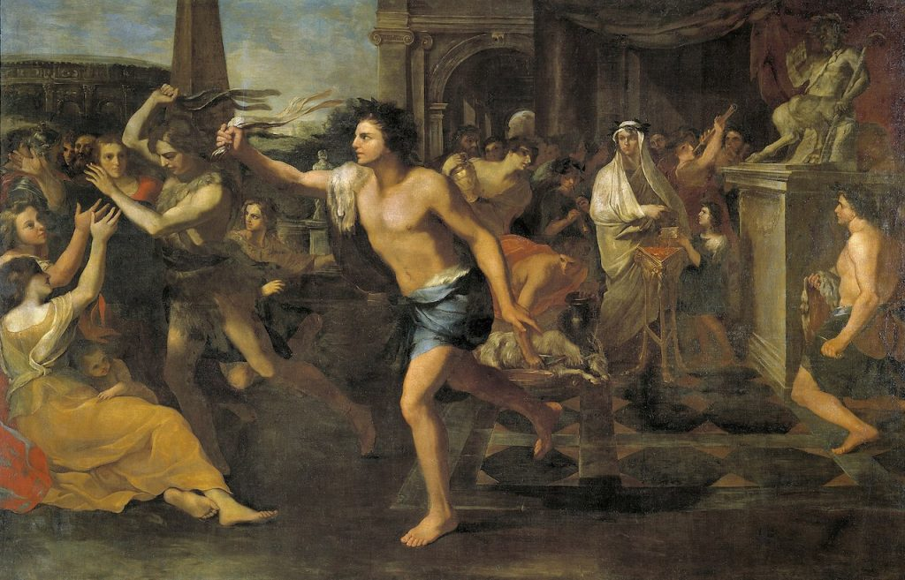

ဒီ ဗယ်လင်တိုင်းနေ့ကို ခရစ်ယာန်ဘာသာ မပေါ်ပေါက်မီ ရောမခေတ်ကတဲက ကျင်းပလာတာ ဆိုတာလဲ လူမသိကြပါဘူး။
ဗယ်လင်တိုင်းလို့ ပြောလိုက်ရင် အနမ်းချိုချိုတွေရယ်၊ ချော့ကလက်ရယ်၊ ပန်းစီးရယ်ပဲ လူသိတာပါ။ သူ့သမိုင်းအမှန်ကတော့ ဒီ့ ထက်ပိုပြီး နက်နဲပါတယ်။
ဗယ်လင်တိုင်းနေ့ရဲ့ မူလအစကို အတိအကျတော့ ဘယ်သမိုင်းပညာရှင်မှ သေသေချာချာ မသိကြပါဘူး။ ဒါပေမယ့် သမိုင်းပညာရှင် အများစု လက်ခံထားတာကတော့ ဗယ်လင်တိုင်းနေ့ အစဉ်အလာဟာ ရောမခေတ် ရှေးယိုးအစဉ်အလာ ကျင်းပခဲ့တဲ့ လူပါကယ်လီယာ (Lupercalia) ဆိုတဲ့ ပွဲတော်ကနေ အစပြုတယ်လို့ ယုံကြည်ကြပါတယ်။
ဒီပွဲတော်ဟာ ရောမခေတ် မတိုင်မီ ကတဲကကို အီတလီက ရှေးလူမျိုးစုတွေ ကျင်းပခဲ့တာ ဖြစ်နိုင်တယ်လို့ ဆိုပါတယ်။ ဒီပွဲတော်ကို ရောမခေတ်မှာ နှစ်စဉ် ဖေဖေါ်ဝါရီလ ၁၃ ကနေ ၁၅ အထိ သုံးရက်တိုင်တိုင် ကျင်းပပါတယ်။ ဒီပွဲမှာ ဆိတ်ထီးနဲ့ ခွေးထီးတွေကို ယာစ်ပူဇော်ပြီးနောက် လူပါကယ် ဂုဏ်းဝင် ဘုန်းကြီးတွေဟာ (ဒီဘုန်းကြီးတွေကို လူပါချီ Luperci လို့ခေါ်ပါတယ်။ အဓါပ္ပါယ်က “ဝံပုလွေ ညီအကိုများ” လို့ အဓါပ္ပါယ် ရပါတယ်) သူတို့ရဲ့ကိုယ်ကို ဆိတ်သွေး၊ခွေးသွေးတွေနဲ့ လိမ်းကြံလိုက်ပါတယ်။
ဒီ့နောက် နို့ရည်နဲ့ စိမ်ထားတဲ့ သိုးမွေးနဲ့ သူတို့ကိုယ်က သွေးတွေကို စင်ကြယ်အောင် ဆေးကြောပြီးတဲ့နောက်မှာ အစားအစာနဲ့ အရက်တွေကို ပွဲလာသူတွေက မူးအောင် စားသောက်ကြပါတယ်။ မူးပြီဆိုရင် ခုနက သတ်ပြီး ယာစ်ပူဇော်ထားတဲ့ တိရစ္တာန်တွေရဲ အရေခွံကို ခွာပြီး ကြာပွတ်တွေ လုပ်ပါတယ်။
နောက်မှာတော့ မူးနေတဲ့ လူပါကယ် ဘုန်းကြီးတွေဟာ အင်္ကျီမပါ ဗလာကိုယ်လုံးတီးနဲ ရောမမြို့အတွင်း လှည့်လည်ပြီး တွေ့ရာလူတွေကို ကြာပွတ်တွေနဲ့ လိုက်ရိုက်ပါတော့တယ်။ ဒီကြာပွတ်နဲ့ အရိုက်ခံရရင် ကလေးရဖို့လွယ်တယ်၊ ကိုယ်ဝန်ဆောင်ရင်လဲ အန္ဓရာယ်ကင်းပြီး၊ ကလေးမီးဖွားရတာလဲ လွယ်တယ်လို့ ယုံကြည်ကြတဲ့အတွက် ရောမမြို့က အမျိုးကောင်း သမီးပျိုများဟာ သူ့ထက်ငါ အလုအယက် အရိုက်ခံရဖို့ ကြိုးစားကြပါတယ်။
ဒါတင် မကသေးပါဘူး။ ဒီပွဲတော်ကာလ အတွင်းမှာ စိတ်ပါဝင်စားသူ အပျိုလူပျိုတွေကို အချင်းချင်း မဲဖေါက်ပြီး တွဲဖက်ပေးတဲ့ အစဉ်အလာလဲ ရှိပါသေးတယ်တဲ့။ လူပျိုတွေဟာ အပျိုမိန်းကလေးရဲ့ အမည်ကို မဲနှိုက်ပြီး ကိုယ်မဲကျတဲ့ မိန်းမပျိုနဲ့ ပွဲတော်ကာလ အတွင်းမှာ ပျော်ပါးကြပါတယ်တဲ့။ ဒီပွဲတော်ဟာ ရောမခေတ်က အတော်ကြီးမားတဲ့ ပွဲတော်တစ်ခုပဲ ဖြစ်ပါတယ်။

ဒါ့ကြောင့် ခရစ်နှစ် ၅ ရာစုမှာ ရိုမန်ကက်သလစ် ပုပ်ရဟန်းမင်းကြီး ပထမမြောက် ဂီလားဆီးယပ်စ် (Pope Gilasius I) ကဒီ ဖေဖော်ဝါရီ ၁၄ ကို ခရစ်ယာန် ဘာသာရေးနေ့ထူးနေ့မြတ် အဖြစ် သတ်မှတ်ခဲ့ပါတယ်။ အဓိက ရည်ရွယ်ချက်ကတော့ ဒီနေ့နေ့ ပါတ်သက်တဲ့ ရှေးယိုးအယူအဆတွေကို မေ့ပျောက်သွား စေချင်လို့ပဲ ဖြစ်ပါတယ်။ ပြီးတော့ ဒီနေ့ကို ခရစ်ယာန် သူရဲကောင်း နှစ်ဦးဖြစ်တဲ့ ရောမမြို့သား ဗယ်လင်တိုင်း (Valentine of Rome) နဲ့ တာနီမြို့သား ဗယ်လင်တိုင်း (Valentine of Terni) တို့ကို ဂုဏ်ပြုတဲ့ အနေနဲ့ ဗယ်လင်တိုင်းနေ့ အဖြစ် အမည်ပေးခဲ့ပါတယ်။
ဒီဗယ်လင်တိုင်း နှစ်ယောက်လုံးဟာ အေဒီ ၃ ရာစုအတွင်းက ဖေဖေါ်ဝါရီလ ၁၄ ရက်နေ့မှာ ခရစ်ယာန် ဘာသာကိုးကွယ်လို့ ဆိုပြီး ရောမဧကရစ် ဒုတိယမြောက် ကလောဒီးယပ် ဂေါသိကတ်စ် (Claudius Gothicus II) က သေဒါဏ်ပေးကွပ်မျက်ခြင်း ခံခဲ့ရတာ ဖြစ်ပါတယ်။ သူတို့ အသတ်ခံခဲရတဲ့ ခုနှစ်တွေကတော့ မတူကြပါဘူး။
ဒီနေ့ကို ခရစ်ယာန် ဘာသာရေး နေ့ထူးအဖြစ် သတ်မှတ်အပြီးမှာတော့ ဒီလူပါကာလီယာ ပွဲတော်ကျင်းပတာကို တားမြစ်ပိတ်ပင် လိုက်ပါတော့တယ်။ ဒါပေမယ့် ဒီရှေးရိုး အစဉ်အလာကတော့ လုံးဝပျောက်ကွယ်သွားခြင်း မရှိခဲ့ပါဘူး။ နော်မန်တွေ (ရှေးပြင်သစ်လူမျိုးတွေ) က ဒီနေ့ကို ဂါလာတင်နေ့ (Galatin Day) ဆိုပြီး ကျင်းပကြပါတယ်။ ဂါလာတင် ဆိုတာ နော်မန်စကားနဲ့ “အချစ်” လို့ အဓါပ္ပါယ် ရပါတယ်။ ဒီနေ့ဟာ နော်မန် အမျိုးသားတွေ ပျော်ပါးတဲ့ နေ့တစ်နေ့ဆိုရင် မမှားပါဘူး။
ခရစ် ၁၃ – ၁၄ ရာစုလောက်ကျမှသာ ဒီနေ့ကို ကဗျာဆန်တဲ့ အချစ်နဲ့ သက်ဆိုင်တဲ့ (romantic love) နေ့တစ်နေ့အဖြစ် သတ်မှတ်ကျင်းပလာ ကြတာဖြစ်ပါတယ်။ ဒီအချိန်မှာတော့ အလယ်ခေတ် ဥရောပ လူထုကြားမှာ ဒီနေ့ရဲ့မူလအစ ဖြစ်တဲ့ “မျိုးကောင်းမှု” (သို့) “ရာဂ” နဲ့ဆိုင်တဲ့ အစဉ်အလာဆက်စပ်မှုကို မေ့လျော့သွားကြပါတယ်။
သမိုင်းမှာ ပထမဆုံး Valentine Day ကဗျာကို ရေးခဲ့သူကတော့ ဂျက်ဖရီချောင်ဆာပဲ ဖြစ်ပါတယ်။ ဒီကဗျာကို ဒုတိယမြောက် ရစ်ချတ်ဘုရင်ကြီးနဲ့ ဘိုဟီးမီးယား မင်းသမီး အန်းတို့ရဲ့ စေ့စပ်ကြောင်းလမ်းပွဲအတွက် ရေးစပ်ခဲ့တာ ဖြစ်ပါတယ်။
နောက်တစ်ခုကတော့ မူလ Valentine Day ဖြစ်တဲ့ ဖေဖေါ်ဝါရီ ၁၄ ဟာ ခရစ်နှစ် ၁၅၈၂ မှာ ဂျူလီယာန် ပြက္ခဒိန်ကနေ ဂရီဂိုရီယန် ပြက္ခဒိန်ကို ပြောင်းလိုက်တော့ ဖေဖော်ဝါရီ ၂၃ ဖြစ်သွားပါတယ်။ ဒါပေမယ့် ရက်ကို လိုက်မပြောင်းတော့ပဲ မူလသတ်မှတ်တဲ့ ဖေဖေါ်ဝါရီ ၁၄ မှာပဲ ဆက်လက်ကျင်းပခဲ့ ကြပါတယ်။ ထူးဆန်းတာကတော့ ဒီ ဖေဖေါ်ဝါရီ ၂၃ (မူလ ဂျူလီယန် ပြက္ခဒိန်က ဖေဖေါ်ဝါရီ ၁၄) ဟာ ဥရောပမှာ ငှက်တွေ ပထမဆုံး စမိတ်လိုက်ကြတဲ့ နေ့ပါတဲ့။ ဒါ့ကြောင့်လဲ ဂျက်ဖရီ ချောင်ဆာက “ဒီနေ့ဟာ ဗယ်လင်တိုင်းနေ့မို့ ငှက်အားလုံး သူတို့ရဲ့ ကြင်ဖော်ရှာဖို့ ထွက်လာကြပြီ” လို့ စပ်ဆိုခဲ့တာ ဖြစ်ပါတယ်။
“For this was on seynt Volantynys day, Whan euery bryd comyth there to chese his make”၂၀ ရာစုနှစ် ရောက်တဲ့အခါမှာတော့ ဒီကဗျာဆန်ဆန် အချစ်ကို ဖွဲ့နွဲ့ကြတဲ့ ဗယ်လင်တိုင်းနေ့ဟာ စီးပွားရေး သမားတွေရဲ့ စီးပွားရှာတဲ့ အကွက်ကြီး ဖြစ်လို့သွားပါတော့တယ်။
For this was on St. Valentine’s Day, when every bird cometh there to choose his mate.
Reference: Life Hacker | The Real History of Valentine’s Day